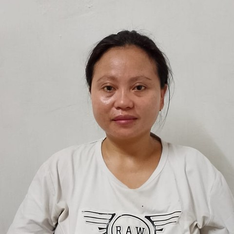

Experienced housekeeper · ten years with one Singapore family
10 years with the same Singapore family (2016–2026). Her length of service has been verified through MOM employment records and direct confirmation with her former employer.
Profile summary
Eni is an experienced Indonesian housekeeper who spent ten continuous years — from 2016 to 2026 — with one family in Singapore. A decade in a single home is uncommon in this kind of work. It points to someone steady and dependable, and to a household that trusted her to keep things running, year after year.
Her strength is all-round housekeeping in a busy home. She is used to a large landed property and the daily rhythm of cleaning, laundry, marketing and upkeep — and she took on more over time, including day-to-day support for the family's elderly grandmother, as the household grew.
At a glance
Why families may consider her
Household experience
In her most recent role, Eni looked after a three-storey landed home. The household included the family's elderly grandmother, the couple, and a teenage son, with additional family members joining the home over time. As it grew busier and the grandmother came to need more support, Eni's responsibilities grew with it.
Her day-to-day work covered general housekeeping, laundry and ironing, grocery shopping and marketing, and the practical upkeep of the property. She also helped care for the family's pets and supported the grandmother day to day, including accompanying her to hospital appointments.
Cooking
Eni cooks simple Chinese home-style meals — the everyday dishes that anchor a family table. Although she is Muslim, she is comfortable preparing her employer's full range of dishes, including pork-based soups.
Children & elderly
Eni is comfortable around children and is best suited to school-age children rather than infants — she prefers not to take on the care of babies.
She has real experience supporting an elderly person day to day, built over her years helping the family's grandmother. That said, she is clear that she is happiest in a housekeeping-focused role, with elderly support as part of the picture rather than its main focus.
Pets
Eni is comfortable with both cats and dogs, and helped care for pets in her most recent home.
Employment history
2016 – 2026 · Singapore (verified)
Ten years with one family in a three-storey landed home. General housekeeping, laundry, marketing and upkeep, alongside pet care and day-to-day support for the family's elderly grandmother.
Why she is moving on
As the household grew and needed more support, Eni asked whether a second helper might join. The family chose to keep one helper, and after ten years she decided to look for a new role. A planned next placement then fell through at short notice.
Earlier · Jakarta, Indonesia
General housework for a family in Jakarta, until she left to marry. Self-reported; her verified record covers her ten Singapore years.
Currently
In Indonesia, ready for her next family. Passport valid to 2030.
Verification
Ten years of continuous employment in Singapore (February 2016 – March 2026) with one family. Confirmed through her MOM employment history and direct contact with her former employer.
This confirms her employment and its length — it is not a personal recommendation. No employer reference is attached to this profile, and her earlier work in Jakarta is self-reported.
Family she may suit
Eni is likely to suit a household that values steady, independent housekeeping and wants someone who will settle in for the long term — her ten-year record speaks to exactly that.
She may be less suited to roles centred on infant care or intensive elderly nursing, which aren't where her strengths lie.
Full employment history available to interested families, with Eni's consent.